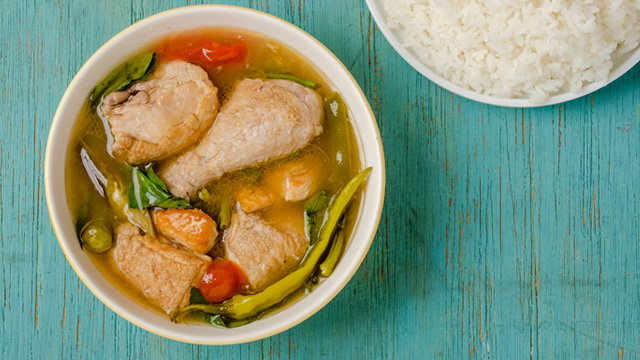

Pork Sinigang

Chicken Sinigang
in the philippines
Sinigang is marked as Filipino comfort food . It rouses the senses because of the sourness and slight spice. Also, ingesting the long peppers can make the body sweat, which helps it to cool especially during a humid day. Food historians even commended sinigang for being a refreshing and appetite-boosting dish perfect for the Philippines’ tropical climate. A Filipino food writer even wrote in an article that the dish most likely was already in existence during the pre-Hispanic era. He also considers sinigang as the Philippines’ national food.
Pork Sinigang
Chicken Sinigang